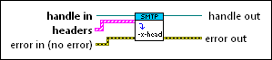

Set Headers VI
Owning Palette: SMTP Email VIs
Requires: Full Development System
Sets a list of auxiliary headers that you want to send with the email. This VI overwrites any header values that you specify before this VI executes.

 Add to the block diagram Add to the block diagram |
 Find on the palette Find on the palette |